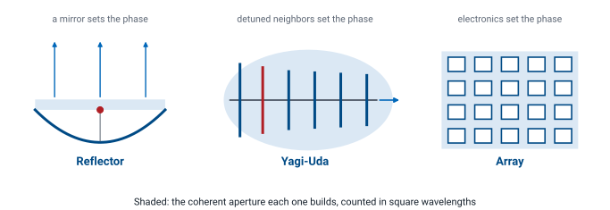
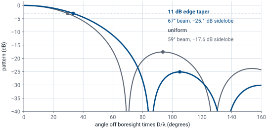
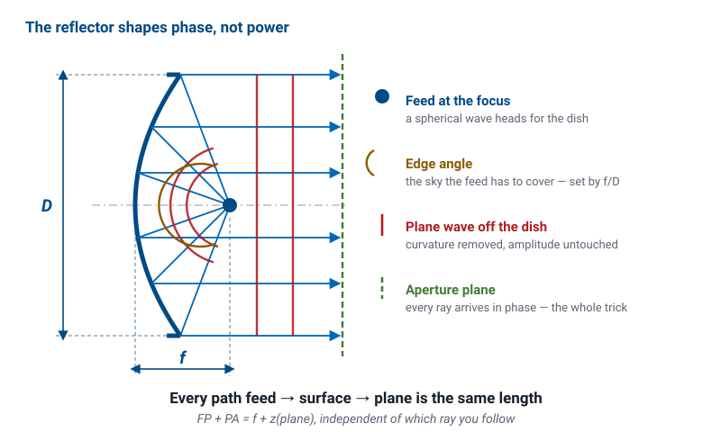
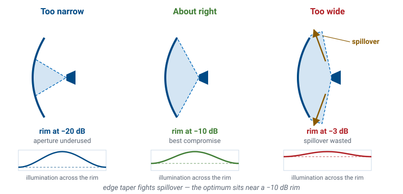
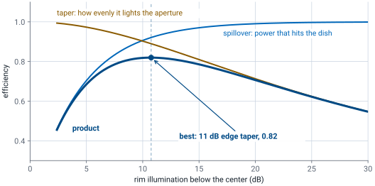
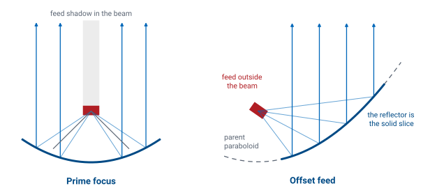
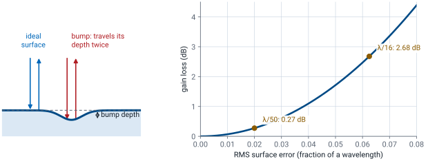
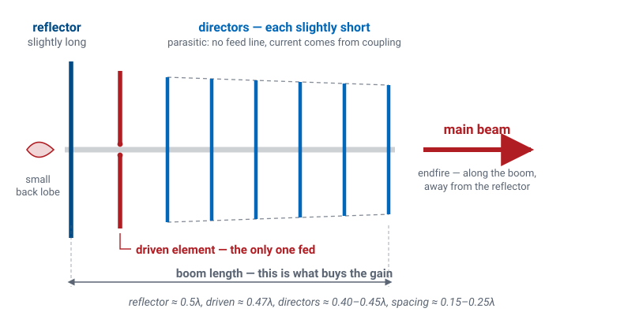
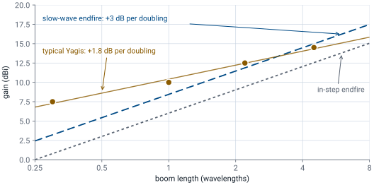
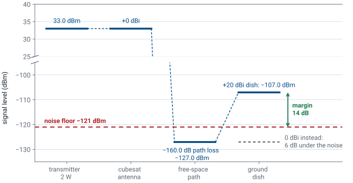

L14 - High-Gain Antennas#
High-Gain Antennas
High gain means a large radiating area driven in phase.
Lesson 14 · Antennas, Phased Arrays, and Radar Systems · Dr. Neil Rogers
Slides
Learning Objectives
- I can compute an aperture antenna's gain and beamwidth from its physical size, and explain why gain is fundamentally a statement about area.
- I can explain how a parabolic reflector's equal-path geometry turns a spherical wave into a plane wave, and identify what f/D, feed illumination, blockage, and spillover do to aperture efficiency.
- I can explain how a Yagi-Uda gets gain from parasitic elements, and how detuning the reflector and directors sets the phase that puts the beam endfire.
- I can describe the array as the third approach to high gain, and state why the next module is devoted to it.
- I can select an appropriate high-gain antenna for a given application and defend the choice with numbers.
Where We Were
Lesson 13 topped out at 20 dBi, enough for a short local link.
A satellite at 36,000 km or a target ten miles out needs more.
Every antenna today, from 20 to 40 dBi, gets its gain from coherent area.
This is the last lesson in Module 2, and it closes the loop the module opened with. You can now predict an antenna’s pattern from its geometry, simulate it, and measure it with a quantified statement of how much of the measurement to believe. Everything today is a gain claim we already know how to check.
The One Idea
High gain means a large radiating area driven in phase.
An aperture is not big in meters. It is big in wavelengths.
Reflectors, Yagis, and arrays are three ways to build that area.

Every high-gain antenna ever built is a different scheme for assembling a big, coherent aperture: a reflector collects area with a mirror, a Yagi collects it from currents induced on its parasitic elements, and an array adds the area one element at a time. Read the physics before the algebra — \(A/\lambda^2\) counts how many square wavelengths the antenna spans, \(\eta_{\text{ap}}\) is the fraction of that area the antenna uses, and \(A_e = \eta_{\text{ap}}A = G\lambda^2/4\pi\) is the number Friis cares about.
The formula is the one Lesson 13 derived for the horn, and nothing about it is specific to horns. Straight ahead of a flat aperture every phase factor in the radiation integral is 1, so the radiation vector is the plain sum of the aperture field \(E_a\), and Lesson 2’s directivity is
with
A uniform, in-phase field makes the fraction exactly 1. Every loss term in this lesson is a way of making the numerator smaller than the denominator: a darker rim, a phase error from a bumpy surface, a patch of the aperture blocked by the feed. Hold on to this ratio; the next five frames each evaluate a piece of it.
The Circular-Dish Shortcut
Every doubling of diameter adds 6 dB.
Every doubling of frequency adds 6 dB on the same dish.
For a circular dish, \(A = \pi D^2/4\) and the aperture formula collapses to the one to memorize. The second consequence is why the satellite industry keeps moving up in frequency: the same dish on the roof gains 6 dB every time the band doubles, until the surface tolerance limits it.
Beamwidth and Aperture Size
Double the dish: the beam halves and the gain climbs 6 dB.
Those are the same statement.

Lesson 6 established the Fourier logic: a wider aperture is a narrower beam, and the beamwidth of an aperture of size \(D\) scales as \(\lambda/D\). Power the antenna no longer sends sideways goes to boresight instead.
The \(70^\circ\) coefficient already assumes a tapered illumination. For a uniform circular aperture of diameter \(D\), Lesson 6’s radiation vector is the two-dimensional version of the line source’s sinc: the integral of \(e^{+jk\hat{\mathbf r}\cdot\mathbf{r}'}\) over a disk, which is
The half-power point is at \(u = 1.616\), so the full beamwidth is
with a first sidelobe at \(-17.6\) dB. Nobody illuminates a dish uniformly, and we will see why two parts from now: a feed that lights the rim 11 dB below the center widens the beam to \(67^\circ\lambda/D\) and pushes the sidelobes to \(-25\) dB. Feeds that taper harder widen it further, so \(70^\circ\) is the round, slightly conservative design number. Use it for design, and use the interactive below to build the reflex.
Eliminating \(D\) between the gain formula and the beamwidth rule ties the two together:
for \(\eta_{\text{ap}} = 0.65\). That sits inside the 26,000 to 32,400 range Lesson 2 gave for the pencil-beam estimate \(D \approx 41{,}253/\theta_1\theta_2\), which is the same statement from the pattern side: the narrower the beam, the higher the gain.
Gain, Beamwidth, and Surface Error
Drive the sliders and watch two numbers move together. Set \(D/\lambda\) and the dish redraws with a tick on the rim for every wavelength across it, while the beam cone narrows on the same canvas. Notice that gain climbs 6 dB per doubling of \(D\) while the beam halves — and then open the surface-error slider and watch the amber curve: hold the panel tolerance fixed and grow the dish, and surface error quietly caps how far you can push it.
Worked Example — a 1 m Dish at 12 GHz
A home satellite-TV dish, roughly 1 m across, receiving Ku band at 12 GHz. Take \(\eta_{\text{ap}} = 0.65\).
Wavelength. \(\lambda = c/f = (3\times10^{8})/(12\times10^{9}) = 0.025\ \text{m}\), so \(D/\lambda = 40\) and the dish is forty wavelengths across.
Gain.
Beamwidth.
A dish that drifts two degrees off the satellite therefore loses the signal.
Effective aperture.
Sanity check on the far field. Lesson 5’s far-field boundary is the distance at which the path from the rim of a \(D\)-wide aperture is within \(\lambda/16\) of the path from its center:
You could not measure this antenna on the bench range you used in Lesson 11, and Lesson 9 explains why: it needs a compact range or a near-field scanner, even though one person can carry the dish.
The Parabolic Reflector
A reflector amplifies nothing.
It takes the spherical wave a small feed already radiates and rearranges its phase.
A large flat area then leaves the antenna in step.

The parabola is the surface that does this exactly, and Lesson 9’s compact range is the same geometry used indoors — there the collimated wave is aimed across a chamber instead of at a satellite.
The Equal-Path Property
The \(z_P\) cancels.
Every ray, edge to center, takes the same path length.
One line of algebra is the entire reason parabolic reflectors exist.
Put the vertex at the origin with the axis along \(z\), so the surface is \(z = \rho^{2}/4f\) and the focus sits at \(z = f\). The distance from the focus to a point \(P\) on the surface, at radius \(\rho_P\) and height \(z_P\), follows from Pythagoras and the surface equation \(\rho_P^2 = 4fz_P\):
so \(\overline{FP} = f + z_P\). That is the parabola’s defining property: every point on it is as far from the focus as from the line \(z = -f\) behind the vertex. A ray from the focus to \(P\) then travels parallel to the axis to an aperture plane at \(z = z_a\), covering a further \(z_a - z_P\). Every point of the aperture plane is therefore in phase.
f/D and the Feed
\(f/D\) |
Edge half-angle |
Character |
|---|---|---|
0.25 |
\(90^\circ\) |
focus in the plane of the rim |
0.35 |
\(71^\circ\) |
deep, needs a broad feed |
0.50 |
\(53^\circ\) |
the common compromise |
0.60 |
\(45^\circ\) |
shallow, feed on a long strut |
The half-angle to the rim follows from the equal-path property. Measure a ray from the focus by its length \(r\) and its angle \(\theta'\) from the axis, pointing back toward the vertex. The point it reaches sits at height \(z_P = f - r\cos\theta'\), and \(\overline{FP} = f + z_P\) becomes
The point’s distance from the axis is then
and the rim is where \(\rho = D/2\):
The same \(r(\theta')\) says the rim is farther from the feed than the vertex is, by the factor \(2/(1 + \cos\theta_0)\), so the rim is dimmer than the center even before the feed’s own pattern rolls off. For \(f/D = 0.5\) that spreading alone puts the rim 1.9 dB below the center.
A deep dish (small \(f/D\)) shields the feed from ground noise but demands a feed with an almost hemispherical pattern. A shallow dish is easy to illuminate cleanly but puts the feed far out on a wobbly strut. Most prime-focus reflectors land between 0.3 and 0.6.
Dish and Feed
The widget uses the same model as the 10 dB rule two frames on: a feed with power pattern \(\cos^n\theta'\) at the focus of a dish with the chosen \(f/D\). The left panel draws the dish to scale with the feed’s pattern at the focus, shading the part that misses the rim; the right panel plots spillover, taper, and their product against edge taper for that \(f/D\). Start at the default, \(f/D = 0.5\) and \(n = 4\): the rim sits at \(53^\circ\), the edge is 10.8 dB down, and the product is 0.82. Narrow the feed and spillover falls while the taper efficiency falls with it; widen it and the reverse. Then change \(f/D\) and press the best-\(n\) button: from \(f/D = 0.4\) up, the best product stays near 0.82 at about an 11 dB edge taper, which is why the rule does not depend on the dish. Below about \(f/D = 0.35\) the model’s best product climbs higher, because its feed radiates nothing behind itself and a very broad feed then wastes almost nothing. Real feeds that broad do not exist, which is one reason deep dishes are uncommon.
Aperture Efficiency Losses
\(\eta_{\text{ap}} \approx 0.55\) to \(0.7\) for a good reflector.
The missing 30 to 45% comes from spillover, taper, blockage, and surface error.
Each one is a design tradeoff, not a manufacturing defect.
The first trade is the feed’s own pattern. Aim a narrow feed at the dish and the rim sits 20 dB down: the outer part of the dish contributes little, and the effective area shrinks. Widen the feed and the rim brightens — but now power passes the rim entirely and is lost. On receive, spillover also adds noise. Lesson 12’s antenna temperature \(T_A\) is the temperature of whatever the pattern sees, weighted by the pattern. The main beam of an earth-station dish sees sky at a few kelvin to a few tens of kelvin, but the spilled part of the feed pattern looks past the rim at ground near \(290\ \text{K}\), and it raises \(T_A\) and with it the noise \(kT_AB\) the antenna delivers.
The 10 dB Rule

Illuminate the rim about 10 dB below the center. Taper loss and spillover pull opposite ways, and their product peaks near 10 dB.
It is the house rule of thumb for reflector feeds, and it is why a dish’s aperture distribution always looks like one of the tapers from Lesson 6, with lower sidelobes as a side effect. A uniform circular aperture has its first sidelobe at \(-17.6\) dB; a feed that follows the rule pushes it to about \(-25\) dB.
We can compute the optimum. Model the feed’s power pattern as \(\cos^n\theta'\) and sweep \(n\). Two efficiencies pull against each other. The spillover efficiency is the fraction of the feed’s power that lands on the dish at all,
and the taper efficiency \(\eta_\text{t}\) is the ratio from the frame on the one idea, \(\left\vert\int E_a\ dS'\right\vert^2/\left(A\int\vert E_a\vert^2\ dS'\right)\), with the aperture field set by the feed pattern and the \(r(\theta')\) spreading of the previous frame:
A broad feed (small \(n\)) gives a nearly uniform aperture and \(\eta_\text{t}\) near 1, but spills. A narrow feed (large \(n\)) puts everything on the dish but leaves the rim dark. For \(f/D = 0.5\) the product peaks at an edge taper of \(10.7\ \text{dB}\), where \(\eta_\text{s} = 0.92\), \(\eta_\text{t} = 0.89\), and \(\eta_\text{s}\eta_\text{t} = 0.82\).

The peak is broad: anything from about 8 to 14 dB is within 0.03 of the best efficiency, which is why a rule of thumb is good enough.
Blockage and the Offset Feed
A prime-focus feed and its struts sit in the beam.
A blocked diameter \(d\) scales the gain by this factor and raises the sidelobes.
An offset feed moves the feed out of the beam.

On a 3 m dish a 15 cm feed is negligible. On a 45 cm consumer dish it is not, which is why the dish on the roof looks oval and has its arm hanging off the bottom: the reflector is a slice cut off-axis from a much larger imaginary paraboloid, giving zero blockage and cleaner sidelobes, and the tilted slice is what makes the panel look taller than it is wide.
The blockage factor is the aperture-efficiency ratio again. The feed still radiates the power aimed at the blocked disk of area \(A_b\), so the denominator keeps all of \(A\), but the blocked disk scatters that power instead of adding it in phase on boresight, so the numerator loses the blocked area. For a uniform field,
A \(15\ \text{cm}\) feed loses \(0.02\ \text{dB}\) on a \(3\ \text{m}\) dish and \(1.0\ \text{dB}\) on a \(45\ \text{cm}\) one.
Surface Accuracy — Ruze’s Formula
\(\lambda/50\) RMS loses 0.27 dB, which is negligible.
\(\lambda/16\) RMS loses 2.7 dB, which disqualifies the surface.

Phase errors from a bumpy surface reduce the gain exponentially. A bump of height \(\epsilon\) on a shallow dish lengthens the path in and back out by \(2\epsilon\), a phase error \(\delta = 2k\epsilon\), so an RMS surface error \(\sigma\) is an RMS phase error \(\delta_\text{rms} = 4\pi\sigma/\lambda\). In the aperture-efficiency ratio the magnitude of \(E_a\) is unchanged, so the denominator is too, but the numerator now sums \(e^{j\delta}\) over the aperture. For random, Gaussian-distributed errors that sum averages to \(e^{-\delta_\text{rms}^2/2}\), and squaring it gives
In decibels the constant is \(10\log_{10}(e)\ (4\pi)^2 = 685.8\). Note what it means for a fixed piece of hardware: a dish held to 0.5 mm RMS is essentially perfect at 6 GHz and has thrown away 1.7 dB by 30 GHz. Big dishes at short wavelengths are a machining problem, not an electromagnetics problem.
The Efficiency Budget
Loss term |
Typical |
Why |
|---|---|---|
Spillover |
0.90 |
power past the rim |
Taper |
0.85 |
rim darker than center |
Blockage |
0.95 |
feed and struts |
Surface |
0.94 |
Ruze |
Everything else |
0.97 |
cross-pol, feed |
Product |
0.66 |
an ordinary reflector |

That product is where the \(\eta_{\text{ap}} \approx 0.65\) we have been assuming comes from. It is an accounting result, not a constant of nature, and every row of it is a design decision someone made. The spillover and taper rows sit a little below the 0.92 and 0.89 of the 10 dB rule’s optimum, because a real feed’s pattern is not exactly \(\cos^n\theta'\). The cross-polarization in “everything else” is power the dish radiates in the polarization orthogonal to the intended one, which Lesson 3 showed a matched receiver cannot collect.
The Yagi-Uda

A reflector collects area with a mirror. A Yagi collects it from currents induced on its neighbors.
Exactly one element is fed. The rest are parasitic.
The driven element is a dipole near \(0.47\lambda\). Every other element has no feed line and no source — just a rod that the driven element’s near field induces a current on. That induced current re-radiates, and the total pattern is the superposition of all of them. There is nothing new physically: this is Lesson 6’s radiation integral with several current filaments instead of one.
Parasitic Element Phasing
A dipole slightly long is inductive; its current lags its induced voltage.
A dipole slightly short is capacitive; its current leads.
The long reflector sits behind; progressively shorter directors sit ahead.
The lag and lead are Lesson 7’s input impedance at work. A parasite is a dipole with no feed, driven by the voltage \(V\) the driven element’s field induces on it, so its current is \(I = V/Z\) with \(Z = R + jX\). Lesson 7 found \(X = +42.5\ \Omega\) at exactly \(\lambda/2\), with resonance a little shorter. Longer than resonance, \(X > 0\) and the current lags \(V\) by \(\arctan(X/R)\); shorter, \(X < 0\) and it leads.
What phase the reflector needs comes from Lesson 6’s radiation vector, \(N_z = \int I(z')\ e^{+jkz'\cos\theta}\ dz'\), with the integral now a sum over two filaments: the driven element at \(z = 0\) and the reflector a distance \(d\) behind it, carrying \(I_2 = aI_1e^{j\alpha}\). Straight ahead (\(\theta = 0\)) and straight back (\(\theta = \pi\)),
The back lobe cancels when \(\alpha + kd = \pi\). For a typical spacing \(d = 0.2\lambda\), \(kd = 72^\circ\), so the reflector’s current must sit \(108^\circ\) from the driven element’s. The forward sum is then \(\vert 1 + e^{j36^\circ}\vert = 1.90\) for \(a = 1\), nearly the full 2. Part of that phase comes from the coupling, since a parasite’s induced current re-radiates roughly in opposition to the field that drove it, and the detuning trims the rest. The reflector runs about \(0.5\lambda\), and its added lag is what tips the balance toward canceling behind. The directors run around \(0.40\) to \(0.45\lambda\), and their detuning sets the phase lag from one director to the next at slightly more than the free-space \(kd\). That is a slow traveling wave: a wave along the boom whose phase velocity is slightly less than the speed of light, which is what narrows an endfire beam below what in-step elements would give.
This course does not use mutual-impedance matrices. To find the currents on the parasites exactly, we would solve a coupled system with one row per element — that is what NEC did in Lesson 8. Here, the phenomenology is the point: long lags, short leads, and the beam goes toward the short end.
Two-Element Yagi
The widget evaluates the two-filament radiation vector from the frame above, \(1 + a\ e^{j(\alpha \mp kd)}\), straight ahead and straight back, and draws the full pattern in the plane of the boom. Start at the default, \(d = 0.2\lambda\) and \(\alpha = 108^\circ\): the back sum closes to zero and the forward sum is 1.90. Then move \(\alpha\) and watch the null leave the back and the front lobe shrink. Shorten the spacing to \(0.1\lambda\) and press back null: the cancelling phase moves to \(144^\circ\), and the forward sum falls, because the two currents now nearly oppose each other in every direction. Lower \(a\) and the null fills in, which is what a reflector cut too far from resonance does: its induced current is too weak to cancel the driven element.
Yagi Gain and Boom Length

About +2 dB per boom doubling; 3 is the ideal.
The boom length, not the element count, sets the gain.
The plotted points are typical published designs:
Elements |
Boom |
Gain |
|---|---|---|
3 |
\(0.3\lambda\) |
7.5 dBi |
6 |
\(1.0\lambda\) |
10 dBi |
10 |
\(2.2\lambda\) |
12.5 dBi |
16 |
\(4.5\lambda\) |
14.5 dBi |
The result is an endfire beam, main lobe along the boom (the line of the elements) and away from the reflector, rather than broadside to it. Its front-to-back ratio, Lesson 2’s main-lobe peak over the lobe directly behind, is 15 to 25 dB.
Why the boom sets the gain is Lesson 6’s line source turned on its end. Put a current \(I(z') = I_0e^{-jkz'}\) along a boom of length \(L\), phased to travel forward at the speed of light. The radiation vector is the sinc of Lesson 6 with its argument shifted,
so the beam peaks at \(\theta = 0\), along the boom. The half-power point \(\vert u\vert = 1.39\) now falls at \(\theta^2 \propto \lambda/L\), not \(\theta \propto \lambda/L\) as it did broadside, and the beam is a cone, that narrow in every plane. Its solid angle goes as \(\theta^2 \propto \lambda/L\), so the directivity is proportional to \(L\): the exact result is \(D \approx 4L/\lambda\), and a slow wave pushes it toward \(7L/\lambda\). That is \(+3\) dB per doubling of the boom, whatever the number of elements on it.
Real Yagis fall short of that slope. The table climbs about \(1.8\) dB per doubling: a short Yagi beats the line-source estimate (\(7L/\lambda\) gives 8.5 dBi at \(1\lambda\) against the table’s 10) because its elements are dipoles with gain of their own, and a long one falls behind it (15.0 dBi at \(4.5\lambda\) against 14.5) because the current dies away on the far directors. A Yagi needs only one reflector, because the first already sees very little field behind it. Adding more directors to the same boom adds almost nothing. Practical single Yagis range from 8 to 15 dBi; beyond that, designers stack several and let the stack act as an array.
Yagi Bandwidth
Everything on a Yagi is a detuned resonator.
Moving a few percent off the design frequency shifts the phases and degrades the pattern.
That is fine for a fixed-channel TV, amateur, or point-to-point link, which is where Yagis appear, and a poor fit for anything wideband. It is also the easiest prediction in this lesson to check on the analyzer from Lesson 10.
Arrays
Build the aperture from \(N\) small antennas, fed coherently.
Sixteen patches add 12 dB; sixty-four add 18 dB.
Change each element’s phase and the beam moves, in microseconds.

That capability is worth a module of its own, and it gets one. Module 3 develops the array factor, pattern multiplication, beam steering, grating lobes, and tapering, and you will steer a real beam on the ADALM-PHASER hardware. For today, file the array alongside the reflector and the Yagi as the third approach to the same goal: coherent area.
The \(10\log_{10}N\) is the radiation vector once more. Fed in phase, \(N\) identical elements sum to \(N\) times one element’s radiation vector on boresight, as Lesson 12’s element-and-image pair summed two:
The third line holds only under a condition. Total radiated power adds element by element only when the elements are far enough apart, about \(\lambda/2\), that they do not share aperture; crowd them closer and their mutual coupling changes each one’s radiated power. So the gain grows with \(N\) only if the aperture grows with it, which is the one idea again: a \(\lambda/2\) grid of \(N\) elements has area \(N\lambda^2/4\), and \(4\pi(N\lambda^2/4)/\lambda^2 = N\pi\).
Choosing: Five Questions
How much gain does the link budget require? Run it first.
What frequency?
How much bandwidth?
Does it have to move or steer?
What are the cost, size, weight, and wind load?
In that order, those five settle almost every real selection. Excess gain adds cost and tightens the pointing requirement. Aperture antennas get small and cheap as \(\lambda\) shrinks while wire antennas get fragile. Reflectors and horns are broadband; Yagis and patch arrays are not. A dish steers mechanically and slowly, an array electronically and instantly, a Yagi mostly not at all. And a 20 dBi antenna that cannot survive local wind and ice loading is not a usable answer.
Three Approaches Compared
Reflector |
Yagi |
Array |
|
|---|---|---|---|
Gain |
25–60 dBi |
8–15 dBi |
15–40 dBi |
Bandwidth |
wide |
a few % |
moderate |
Steering |
mechanical |
fixed |
electronic |
Profile |
bulky |
long boom |
flat panel |
Cost driver |
surface |
almost none |
one chain per element |
Worked Selection — 20 dBi at 2.4 GHz
You need a 20 dBi ground-station antenna at 2.4 GHz for a cubesat downlink. \(\lambda = 0.125\ \text{m}\), and \(G = 20\ \text{dBi} = 100\).
Required effective aperture. \(A_e = G\lambda^{2}/4\pi = 100(0.015625)/12.57 = 0.124\ \text{m}^{2}\). Every candidate has to deliver that much coherent area.
Dish. With \(\eta_{\text{ap}} = 0.6\), \(A = 0.124/0.6 = 0.207\ \text{m}^{2}\), so \(D = 2\sqrt{A/\pi} = 0.51\ \text{m}\). Beamwidth \(\theta_\text{HP} \approx 70^\circ(0.125/0.51) = 17^\circ\). A half-meter dish with a 17-degree beam is forgiving to point, cheap, and broadband, and no other candidate here matches it on all three.
Yagi. A single Yagi tops out near 14.5 dBi at a \(4.5\lambda\) (0.56 m) boom, so 20 dBi needs four stacked in a 2x2 bay: \(14.5 + 10\log_{10}4 = 20.5\ \text{dBi}\). It works, but it is four booms, a phasing harness, and a narrow band.
Patch array. At \(\lambda/2 = 6.25\ \text{cm}\) spacing with \(\eta_{\text{ap}} = 0.75\), a \(7\times7\) grid spans \(0.44\ \text{m}\) square, \(A = 0.191\ \text{m}^{2}\), giving \(G = 0.75(4\pi)(0.191)/0.015625 = 115 = 20.6\ \text{dBi}\). The panel is flat, presents low wind load, and a later design can steer it electronically, but it needs a 49-way feed network.
Decision. For a fixed ground station on a rotator, take the 0.51 m dish: fewest parts, widest band, lowest cost. Choose the patch array instead the moment you need a flat profile or electronic steering.
Does the Link Close?
Against a \(-121\ \text{dBm}\) noise floor, that is 14 dB of margin.

Cubesat at 1000 km, 2 W transmitter (33.0 dBm) into a 0 dBi antenna, and our 20 dBi dish on the ground, at \(\lambda = 0.125\ \text{m}\). The path loss is Lesson 2’s Friis factor \((\lambda/4\pi R)^2\) in decibels, with \(4\pi R/\lambda = 4\pi(10^6)/0.125 = 1.005\times10^{8}\).
The noise floor is Lesson 12’s \(kT_AB\) with the reference temperature \(T_0 = 290\ \text{K}\), which gives \(kT_0 = -174\ \text{dBm/Hz}\), plus the receiver’s noise figure:
in a 100 kHz channel with a 3 dB noise figure. A dish pointed at cold sky sees a \(T_A\) well below 290 K, so this floor is conservative. The link closes, and it closes because of the 20 dB the dish contributed. Swap the dish for a 0 dBi antenna and \(P_r = -127.0\ \text{dBm}\), 6 dB under the noise.
Summary
Idea |
What it says |
Number to hold onto |
|---|---|---|
\(G = \eta_{\text{ap}}4\pi A/\lambda^{2}\) |
gain is coherent area in square wavelengths |
\(\eta_{\text{ap}} \approx 0.55\)–\(0.7\) for reflectors |
\(G = \eta_{\text{ap}}(\pi D/\lambda)^{2}\) |
circular-dish shortcut |
+6 dB per doubling of \(D\) |
\(\theta_\text{HP} \approx 70^\circ\lambda/D\) |
beamwidth is set by size in wavelengths |
1 m at 12 GHz \(\rightarrow 1.75^\circ\) |
\(A_e = \eta_{\text{ap}}A = G\lambda^{2}/4\pi\) |
effective aperture — what Friis uses |
1 m dish at 12 GHz \(\rightarrow 0.51\ \text{m}^2\) |
\(f/D\) |
sets the edge angle the feed must cover |
0.3–0.6 typical; 0.5 \(\rightarrow 53^\circ\) |
Edge taper |
spillover fights illumination taper |
rim about \(-10\) dB |
Ruze, \(685.8(\sigma/\lambda)^{2}\) dB |
surface error reduces gain exponentially |
\(\lambda/50 \rightarrow 0.27\) dB; \(\lambda/16 \rightarrow 2.7\) dB |
Yagi boom length |
boom length, not element count, sets gain |
\(\approx +2\) dB per doubling (3 ideal); 8–15 dBi |
\(10\log_{10}N\) |
array gain over one element |
64 elements \(\rightarrow\) 18 dB |
Practice
Where This Is Going
Every gain number today was a claim, and we already know how to test one.
\(\eta_{\text{ap}} = 0.65\) was an assumption, and \(70^\circ\lambda/D\) was a rule of thumb.
Module 2 ends here. Module 3 develops the third approach, the array.
Module 2 closes with a complete loop: predict a pattern from geometry, simulate it, measure it, and state how much of the measurement to believe.
Lesson 15 opens Module 3 by going back to the beginning of that loop and asking a sharper question. The aperture size set the beamwidth; what set the sidelobe level? The answer is the illumination across the aperture — the \(-10\) dB edge taper we met today, generalized — and choosing it deliberately is how engineers design every high-performance antenna and phased array. When we get there, remember what an array is doing: assembling the same coherent aperture a dish assembles with a mirror, one element and one phase shifter at a time.